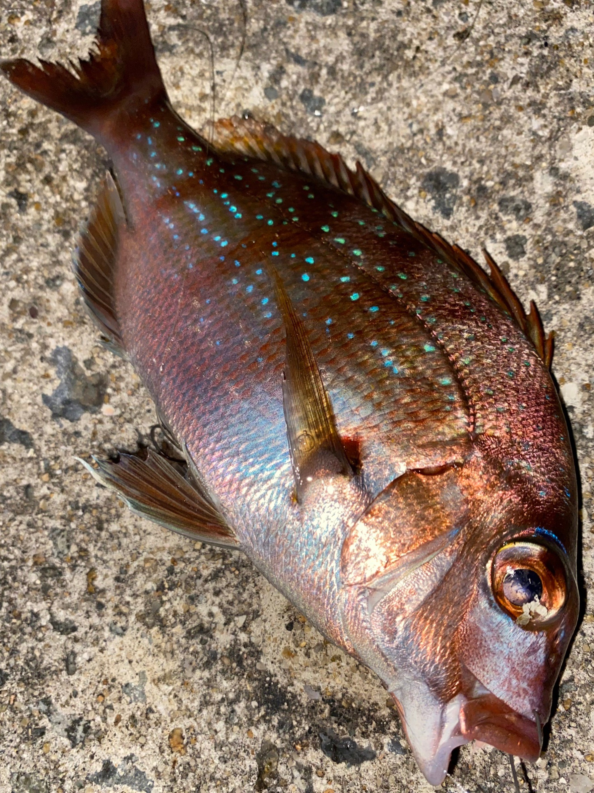
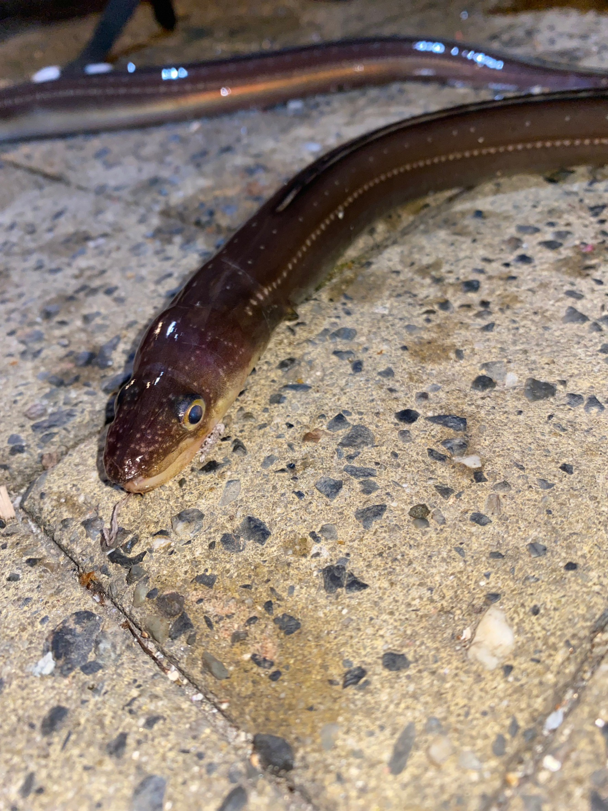

これまでに釣った魚種

マダイ
小さなタイは釣り人の間でチャリコと呼ばれます。青色の斑点が綺麗です。
アコウ（キジハタ）
関西ではアコウと呼ばれる高級魚。地域によっては大きさにより採捕禁止の基準があります。
カサゴ（アラカブ）
関西ではカサゴとよばれる魚。成長速度が遅く20㎝になるまで4～5年かかるといわれています。
ムラソイ
カサゴとよくにている魚。カサゴと比較すると若干黒っぽい色をしています。
イトヒキハゼ
青色の斑点が美しいハゼの仲間。キス釣りの外道として釣れることがあります。
サバ
群れで行動する魚。サビキ釣りで数釣りを楽しむことができます。

チヌ（クロダイ）
釣り人の間ではではチヌと呼ばれる魚。警戒心が高く、主にカニなど甲殻類を食べるため硬いくちばしを持っています。

アナゴ
夜行性の魚。体表の粘膜と血液に毒性があるため、食べる際には加熱が必要です。